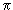
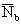
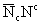
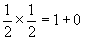
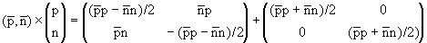
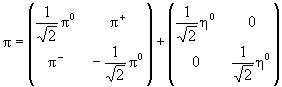
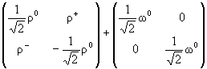
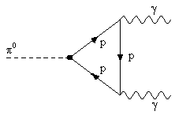

Сравнивая изотопическую и унитарную
симметрии частиц, можно заметить, что в случае
изотопической симметрии среди мультиплетов
часто реализуется низшее спинорное
представление размерности 2 с базисом (1 0)T,
(0 1)T- по этому представлению
преобразуются, в частности, N, Ξ, K,
Ξ*, K*, а унитарные
мультиплеты адронов начинаются с октета
(аналогом ему в SU(2) служит изотриплет).
Возникет вопрос-реализуются ли в
природе низшие спинорные представления SU(3)
размерности 3? Другими словами, есть ли более
элементарные сильновзаимодействующие частицы,
чем обсуждаемые адроны?
Для большей наглядности вернемся в те
времена, когда полагали, что -мезоны
представляют собой связанные состояния нуклонов
и антинуклонов, и попытаемся понять, как такие
состояния можно описать в изотопическом
пространстве. Перемножим спиноры Na,, a, b = 1, 2, а затем вычтем и
прибавим шпур
, c = 1, 2, 3, разложив таким
образом произведение неприводимых
представлений (двух спиноров) на сумму
неприводимых представлений:
(2.18) |
что соответствует разложению  или через размерности представлений 2 × 2 = 3 + 1. В матричном виде
, |
(2.19) |
и мы отождествим для антипараллельных спинов нуклона и антинуклона с нулевым орбитальным моментом с изотриплетом пионов и изосинглетом η
, |
(2.20) |
а для параллельных спинов нуклона и антинуклона J = 1 с нулевым орбитальным моментом с изотриплетом ρ-мезонов и изосинглетом ω
. |
(2.21) |
Эта гипотеза неоднократно с успехом использовалась. Например, по ней был рассчитан распад на два γ-кванта через нуклонную петлю,

Ответ в точности совпал с экспериментом, что
само по себе было удивительно. Действительно,
масса двух нуклонов настолько превышает массу π-мезона , что между
нуклонами должна быть чудовищная энергия связи. В то же время ответ получен
в предположении, что нуклоны практически
свободны. (1949 г., одно из достижений
фейнмановской диаграммной техники в приложении
к распадам адронов.)
С открытием гиперонов число
фундаментальных барионов резко возросло. В связи
с этим возникли и первые модели составных частиц
( мы отвлекаемся здесь от действительно первых
моделе составных частиц, восходящих к Демокриту
и изложенных Титом Каром в его бессмертной поэме
"О природе вещей"). Особенно близкой к
модели унитарной симметрии была модель
Сакаты,
навеянная, по его собственным словам,
"Диалектикой природы" Энгельса. В основе его
модели лежали протон, нейтрон и Λ-гиперон в качестве
фундаментального триплета. Но
октет известных барионов в такой модели не
получается. Идея поместить что-то в триплет, тем
не менее, остается очень привлекательной.